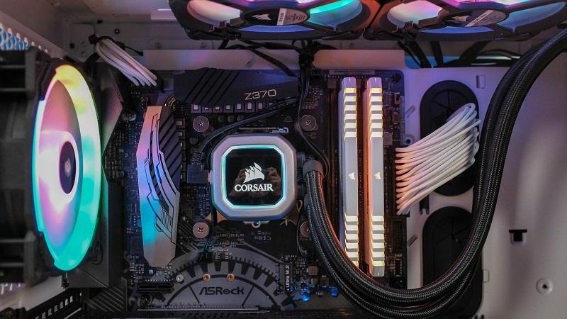
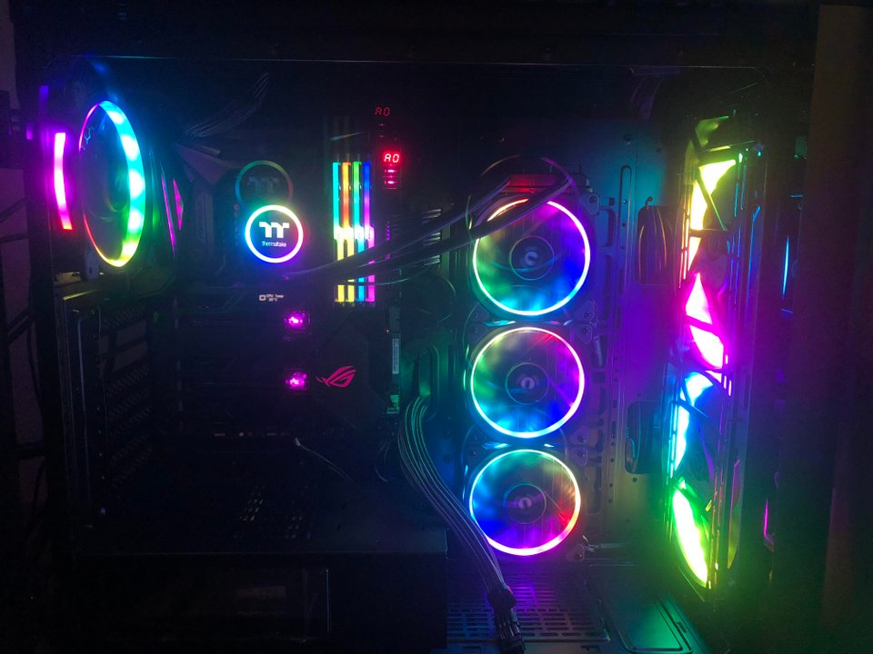

First Build
u/Shnoobed

Threadripper Build
u/VuffyPulva

first build
u/Ovladel
When you build your own PC, you know exactly which parts you are getting and how reliable they tend to be. With a prebuilt pc, they could use subpar motherboards or power supplies to lower the cost, making the pc unreliable and suseptable to damage or failure.
You know when you get a new HP, or Leveno, or ASUS PC and you login just to find all of this random software installed like Scype or HP update assistant or all these other useless softwares that clog up your PC on startup or during use that just are there to slow down your PC or send pointless popups. With a fresh install of a OS of your choosing, you wont have to deal with having to uninstall that stuff.
Learning to build a PC is a valuable skill that teaches you how computer are put together, how the parts interact and work togehter to display content. This can insite a love for PC's and computers that could end up as a carrear for some people.
When you are building your own PC, it turns out to be a lot of fun opening up all of your parts and putting them together. The most fun part of course is pressing the power button and watching you freshly built PC start up for the first time and realizing all of you hard work paid off.
Another reason is that since you put it togther, you can take it apart and replace components with new models of them so you never have to build another one. parts can easily be bought after building and put in like extra RAM, extra Storage, a new Graphics Cards, lights, fans, or coolers.